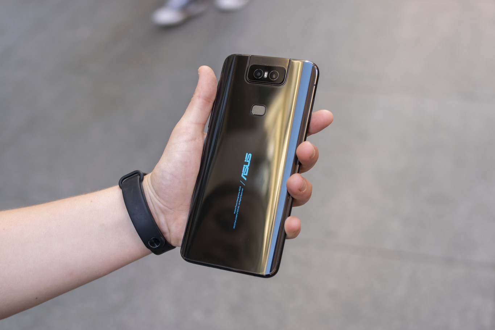

ASUS Zenfone 6, análisis: la cámara rotatoria motorizada convence como alternativa al notch

El año pasado, ASUS volvía a competir en el sector móvil con su ASUS Zenfone 5Z, un dispositivo que renovaba el ASUS Zenfone 5 y que se caracterizaba por montar lo último de lo último en componentes. Rendía bien, sin duda, pero como dijimos en su análisis, se necesita algo más que un procesador de potente para conquistar la gama alta. Ahora, con su nuevo Zenfone 6, la marca le da una vuelta de tuerca a su concepto de smartphone, ofreciendo no solo lo último de lo último en cuanto a componentes, sino también un peculiar sistema de cámara rotatoria bautizado como "Flip Camera".
Es, sin lugar a dudas, el punto más llamativo del terminal. La "Flip Camera" nos permite mover el módulo de la cámara a placer para tomar fotos desde ángulos diferentes u obtener, en un mismo clip, diferentes puntos de vista sin tener que movernos del sitio. El Zenfone 6 llega con un claro objetivo en el punto de mira, el OnePlus 7 Pro. Ambos compiten en el mismo rango de precios y ambos quieren posicionarse en la gama media alta asequible.
Ya tuvimos ocasión de probar el ASUS Zenfone 6 hace tiempo, pero no ha sido hasta hace una semana, cuando fue presentado en Valencia, que hemos podido pasar con él más tiempo, exponerlo a nuestras pruebas y analizarlo en mayor profundidad. He aquí el análisis del ASUS Zenfone 6.
La trasera de cristal transmite que estamos ante un dispositivo premium

Empezamos por el exterior. El ASUS Zenfone 6 está construido en cristal y protegido por Gorilla Glass 6, lo que se traduce en que a la mano se siente premium y bien construido. La trasera está disponible en dos colores, a saber, negro azulado y plateado, siendo el primero el que hemos tenido ocasión de probar nosotros.
El cuerpo del ASUS Zenfone 6 es redondeado, tanto en las esquinas como en los bordes del dispositivo. Eso sienta bien de cara al agarre, ya que el teléfono reposa correctamente sobre la palma de la mano. Es bonito, sobre todo cuando lo ves con la pantalla encendida ocupando la mayor parte del frontal. Lo único que llama la atención de la trasera es el enorme módulo colocado en la zona superior, donde encontramos la doble cámara rotatoria. Es grande, pero tiene su razón de ser, y aunque sobresale ligeramente no hace que el móvil "baile" al tocar sobre las esquinas. Ahondaremos en dicho módulo en el apartado de la cámara.
El dispositivo se siente cómodo en mano y el cristal le da un toque premium que gusta
En mano, como decíamos antes, se siente bien. Es lo suficientemente pesado para sentirse sólido, aunque no tanto como para que canse usarlo durante mucho tiempo. Sin embargo, la trasera es algo resbaladizada, pero para paliarlo la empresa ha añadido una funda dentro de la caja. Eso soluciona a la vez otro problema, y es que las huellas se quedan bastante marcadas, si bien eso es un elemento común en casi todos los móviles hechos de cristal.
Es grande, más o menos como un iPhone 8 Plus, pero se puede usar sin problema con una sola mano gracias, en parte, a algunas modificaciones del software hechas por la empresa. La delantera, por su parte, está ocupada casi en su totalidad por la pantalla y no tiene notch, aunque si una pequeña barbilla de medio centímetro en la zona inferior. De la parte delantera destaca también el LED de notificaciones de la esquina superior derecha, que se ilumina tanto cuandor recibimos un mensaje, correo, mención, etc., como cuando estamos cargando el terminal o se queda sin batería.
En cuanto a las dimensiones, tenemos un terminal de 159,1 milímetros de alto, 75,44 milímetros de ancho y 8,4 milímetros de grosor, lo que nos deja con un dispositivo parecido en términos de tamaño al OnePlus 7 Pro (0,4 milímetros más delgado y algo más bajito y ligero). Eso, sin embargo, no se traduce en menos batería, sino todo lo contrario, ya que el ASUS Zenfone 6 monta 5.000 mAh en su interior.
Repasando la disposición de botones, en la parte trasera tenemos el módulo rotatorio de la cámara, el lector de huellas en una posición cómoda y el nombre de la marca. El canto derecho aloja los botones de volumen, el botón de bloqueo y desbloqueo y la Smart Key. Hablaremos de ella en el apartado del software, pero en pocas palabras es una tecla que sirve para invocar a Google Assistant o hacer otras tareas rápidas. Su ubicación no es la más cómoda, ya que, a diferencia del botón de bloqueo, no llegas a ella cómodamente con el dedo pulgar.
El canto izquierdo se reserva para el slot de la doble tarjeta SIM y la microSD, mientras que el superior se queda con el micrófono de cancelación de audio y la antena. El inferior, finalmente, es el hogar del altavoz, el USB tipo C, el micrófono y el jack de 3,5 milímetros, por que sí, el ASUS Zenfone 6 es compatible con auriculares con cable, algo que ya no vemos tan a menudo. Todos estos elementos están perfectamente alineados y mantienen la simetría.
Lo que no tenemos es certificación IP de resistencia ante el agua y el polvo, pero desde la empresa aseguran que lo protegen "de algún modo". Nosotros, por nuestra parte, hemos preferido no ir a bucear o al desierto con él. Sea como fuere, eso no quita que la sensación global con el terminal sea de resistencia y comodidad, a pesar de que la "Flip Camera" parezca transmitir todo lo contrario.
Pantalla IPS de 6,4 pulgadas que cumple en cualquier condición
Seguimos con la pantalla, que como vimos en el ASUS Zenfone 5 y ASUS Zenfone 5Z, sigue siendo una IPS/LCD. En esta ocasión, la diagonal sube hasta las 6,4 pulgadas y conserva la resolución FullHD+ (2.340 x 1.080 píxeles) en lugar de dar el salto al 2K+. El panel tiene una relación de aspecto 19,5:9 y está protegido por Gorilla Glass 6.
Tiene un brillo de 600 nits y ocupa un 92% del frontal según el fabricante o un 83,8% según GSMArena, que es la referencia que solemos usar para eliminar sesgos y usar un baremo común. Eso se traduce en una pantalla de 100,5 centímetros cuadrados y una densidad de 403 píxeles por pulgada. Siguiendo dicho baremo, se queda algo por debajo de sus principales competidores de la gama alta.
La pantalla viene bien calibrada y se disfruta de día y de noche, pero el brillo automático falla de vez en cuando
En cuanto a la experiencia, la pantalla del ASUS Zenfone 6 viene bien calibrada de fábrica. Los blancos son blancos y los colores tienen un nivel de saturación correcto. Por defecto, el dispositivo viene con el modo de color "Amplia gama de colores" activado por defecto, y es el que recomendamos ya que, al menos durante nuestras pruebas, es el más fiel. El modo estándar azulea ligeramente los blancos y desatura los colores. Aun así, siempre se puede personalizar para ponerlo a nuestro gusto.
A nivel de resolución, el FullHD+ se sigue comportando bien y sigue siendo válido para cualquier situación cotidiana, ya sea jugar, leer o chatear. No hemos echado en falta una resolución más alta en ningún momento. Además, menos resolución también se traduce en una mejor autonomía, y eso es algo de lo que el ASUS Zenfone 6 puede presumir.
Durante nuestras pruebas tampoco hemos tenido problemas con los ángulos de visión ni con destellos, aunque cuando le da la luz de frente aparecen ciertos reflejos verdes. El brillo máximo es lo suficientemente alto para poder usar el móvil a plena luz del día y el brillo mínimo es lo suficientemente bajo para usarlo de noche, aunque habría agradecido poder bajar el brillo un poquito más. Y hablando de usar el móvil de noche, desde los ajustes puedes configurar (y programar) la "luz nocturna", que hace que la pantalla se torne naranja y sea más cómoda de usar.
La luz nocturna aplica una capa naranja sobre la pantalla para mejorar su uso de noche
Sin embargo, sí hay que destacar que el brillo automático podría mejorar ligeramente. En algunas ocasiones, estando a plena luz del día, el brillo se ha bajado al mínimo, lo que hace que tengas que dejar de hacer lo que estés haciendo para subirlo manualmente. No nos ha pasado lo mismo al revés, es decir, usar el teléfono de noche y de repente recibir un fogonazo de luz.
No tenemos pantalla ambiente, pero sí salvapantallas por si lo colocamos en un dock, la posibilidad de que la pantalla se encienda cuando recibamos una notificación y una opción para que al levantar el teléfono se active automáticamente. Ambas opciones, al cabo de los días, han acabado siendo bastante útiles. Finalmente, destacar que la sensibilidad táctil es correcta y no hay ningún tipo de latencia apreciable al interactuar con el dispositivo.